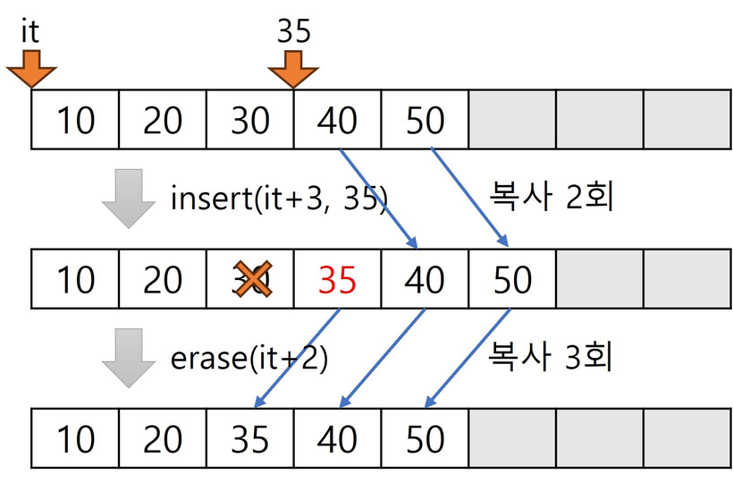
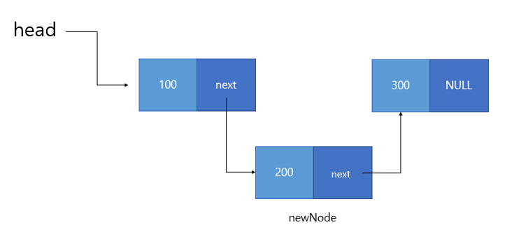
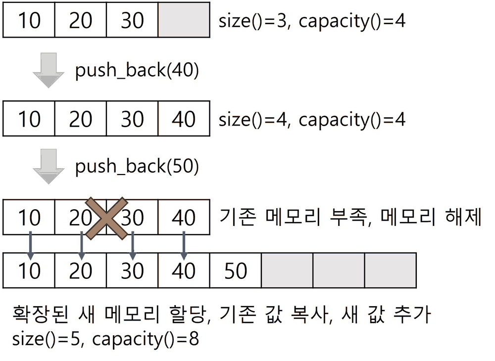

컨테이너 — 담고, 넘기고, 돈다
std::vector와std::array는 무엇이 다르고, C 스타일 배열은 왜 안 쓰나?list와deque는 언제vector보다 나은가?- 함수에
vector를 넘길 때 무슨 일이 일어나나? 인자는 어떻게 받아야 하나? reserve()한 줄은 무엇을 없애나?for (auto x : v)와for (const auto & x : v)는 무엇이 다른가?
라이다 한 바퀴는 거리 값 360개이고, 찾아낸 콘은 몇 개가 될지 모른다. 로봇 코드는 값 여러 개를 한 번에 다루는 일이 대부분이다.
오늘은 그 값들을 담는 타입(컨테이너)과, 담은 것을 함수에 넘기고 한 바퀴 도는 법을 다룬다.
이 과목에서 쓰는 컨테이너는 사실상 std::vector 하나이고, 그 하나를 제대로 쓰는 법이 나머지 전부보다 중요하다.
오늘은 용어 여섯 개를 다룬다. 절마다 먼저 그 문법이 무엇이고 왜 생겼는지를 설명하고, 그다음에 라이다 스캔을 다루는 작은 프로그램에 그것을 적용한다. 오늘 다루는 것 중 셋은 틀린 답을 내지 않는다. 맞는 답을 내면서 쓸데없이 복사할 뿐이다. 그래서 복사와 재할당이 몇 번 일어나는지 실제로 센다.
한 장 요약 — 학기가 끝나도 이 표만 남으면 된다
무엇을 먼저 볼지: 「기본값」이라고 적힌 세 줄이 오늘의 알맹이다. 나머지는 그 기본값을 벗어날 이유가 있을 때만 고른다.
| 용어 | 코드에서 이렇게 보인다 | 이것만 알면 된다 |
|---|---|---|
컨테이너 · std::vector · std::array | std::vector<float> v; / std::array<float, 4> w; | vector가 기본값. 개수가 코드에 이미 적혀 있을 때만 array. C 배열은 안 쓴다 |
std::list · std::deque | l.push_front(x); / d.push_front(x); | 중간·앞에 자주 넣고 뺄 때 고려한다. list는 []가 없다. 고민되면 vector |
| 값 전달 · 참조 전달 | float front(const ScanMsg & msg) | 읽기만 할 인자는 const &가 기본값. 값으로 받으면 부를 때마다 사본이 생긴다 |
| 복사 생성자로 복사 세기 | ScanMsg(const ScanMsg & o) … { ++g_copy; } | 복사는 화면에 안 보인다. 11회의 복사 생성자에 세는 줄을 넣으면 보인다 |
용량 · 재할당 · reserve | v.reserve(n); | 몇 개 들어올지 알면 담기 전에 한 줄. 재할당이 0번이 된다 |
범위 기반 for · const auto & | for (const auto & x : v) | 기본값. auto x로 쓰면 한 바퀴마다 사본이 생긴다 |
① 오늘 만들 것 — 라이다 스캔과 바퀴 속도, AI가 준 그대로 🟡 맡기되 검사
무엇을 만드나
라이다 메시지를 흉내 낸 구조체 ScanMsg에서 정면 거리를 꺼내고, 바퀴 네 개의 속도를 찍는 프로그램이다.
실제 ROS 2에서는 ScanMsg 자리에 sensor_msgs::msg::LaserScan이라는 긴 이름이 오고, 모양과 성질은 같다. 이 메시지가 초당 5번 이상 들어온다.
읽는 법
- 먼저 AI에게 시켜서 받은 코드를 그대로 돌린다. 맞는 값이 나온다.
- ②절부터는 절마다 「개념」이 먼저 온다 — 그 문법이 무엇이고 어떤 문제를 풀려고 생겼는지. 그다음 「예제에 적용」에서 프로그램의 한 곳을 고치거나 세는 장치를 몇 줄 더한다.
- 고치는 자리는 고치기 전(붉은 테두리)과 고친 뒤(푸른 테두리)를 따로 놓는다. 더하기만 하는 단계는 더한 뒤의 모양만 보인다.
- 그 아래 📄 「전체 코드」 상자를 누르면 그 단계의
main.cpp전체가 나온다. 첫 줄 주석에 버전(v1, v2, …)이 있다. 어느 버전을 펼쳐도 그대로 빌드되고 돌아간다. - v1~v3은 프로그램 하나가 자란다. v4·v5는 그 절에서 볼 것 하나만 남긴 짧은 프로그램이다 — 앞 단계의 출력이 섞이면 봐야 할 줄이 묻히기 때문이다.
- 「실제로 나온 출력」에는 그 절이 새로 찍는 줄만 보인다.
- 빌드는 CMake다.
CMakeLists.txt는 ①절 상자에 한 번 있고, 뒤 단계에서도 그대로 쓴다.
1단계 (v1) — 값으로 받고, C 배열에 담는다
const int kScanSize = 360; // 라이다 한 바퀴의 거리 값 개수
struct ScanMsg {
std::vector<float> ranges; // 거리 값 360개
ScanMsg() : ranges(kScanSize, 1.0f) {}
};
// 정면 거리를 꺼낸다 — 값으로 받는다
float front(ScanMsg msg)
{
return msg.ranges.at(0);
}
int main()
{
std::cout << "① 스캔 하나와 바퀴 넷\n";
ScanMsg msg;
std::cout << " 정면 거리 = " << front(msg) << " m\n";
float wheel[4] = {0.5f, 0.5f, 0.5f, 0.5f}; // 바퀴 속도 4개
int wheel_count = 4; // 개수는 따로 들고 다닌다
std::cout << " 바퀴 " << wheel_count << "개, 첫 바퀴 " << wheel[0] << " m/s\n";
return 0;
}🆕 이 코드에서 처음 나오는 것
- const int kScanSize = 360;
- 파일 맨 위에 둔 이름 붙은 상수다.
360을 코드 여기저기에 박는 대신 이 이름을 쓴다. 실습에서 이 한 줄만 바꾸면 프로그램 전체가 따라오는 것을 본다. - ranges(kScanSize, 1.0f)
- 원소가 360개이고 전부 1.0으로 채워진
vector를 만든다. 라이다 한 바퀴의 거리 값이 전부 1.0 m라고 치고 메시지를 채우는 데 썼다.
실제로 나온 출력
$ cmake -S . -B build
$ cmake --build build
$ ./build/scan_list
① 스캔 하나와 바퀴 넷
정면 거리 = 1 m
바퀴 4개, 첫 바퀴 0.5 m/s전체 코드 — v1 (1단계 · AI가 준 그대로) main.cpp + CMakeLists.txt — 이대로 빌드된다
빌드해서 돌리는 법: cmake -S . -B build && cmake --build build && ./build/scan_list
// 12회 라이다 스캔 다루기 — v1 (1단계: AI가 준 그대로)
#include <iostream>
#include <vector>
const int kScanSize = 360; // 라이다 한 바퀴의 거리 값 개수
struct ScanMsg {
std::vector<float> ranges; // 거리 값 360개
ScanMsg() : ranges(kScanSize, 1.0f) {}
};
// 정면 거리를 꺼낸다 — 값으로 받는다
float front(ScanMsg msg)
{
return msg.ranges.at(0);
}
int main()
{
std::cout << "① 스캔 하나와 바퀴 넷\n";
ScanMsg msg;
std::cout << " 정면 거리 = " << front(msg) << " m\n";
float wheel[4] = {0.5f, 0.5f, 0.5f, 0.5f}; // 바퀴 속도 4개
int wheel_count = 4; // 개수는 따로 들고 다닌다
std::cout << " 바퀴 " << wheel_count << "개, 첫 바퀴 " << wheel[0] << " m/s\n";
return 0;
}cmake_minimum_required(VERSION 3.16)
project(scan_list CXX)
set(CMAKE_CXX_STANDARD 17)
add_executable(scan_list main.cpp)이 코드는 컴파일되고, 실행되고, 맞는 값을 낸다. 그래서 그냥 넘어가기 쉽다. 고칠 곳은 두 군데인데, 하나는 눈에 보이고(wheel_count) 하나는 안 보인다(ScanMsg msg).
② 컨테이너 — vector·array·list·deque 🟡 맡기되 검사
개념 — 값 여러 개를 담는 타입
컨테이너(container)는 같은 타입의 값 여러 개를 담는 클래스 템플릿이다(7회 ③절). 표준에 여러 개가 있지만 이 과목의 코드는 std::vector 하나로 거의 전부 돌아간다.
std::vector<T>는 크기가 실행 중에 정해지고 변하는 배열이다. push_back으로 늘고 size()가 개수를 답한다.
std::array<T, N>은 크기 N이 템플릿 인자로 코드에 박힌 배열이다. 컴파일할 때 정해지므로 실행 중에 못 늘린다. 바퀴 4개, 좌표 3개처럼 변하지 않는 개수에 쓴다.
무엇을 먼저 볼지: 맨 오른쪽 열이 고르는 기준이다.
| 컨테이너 | 크기가 정해지는 때 | 이 과목에서 쓰는 자리 |
|---|---|---|
std::vector<T> | 실행 중. 늘었다 줄었다 한다 | 기본값. 라이다 값 360개, 찾아낸 콘 목록 |
std::array<T, N> | 컴파일할 때. 못 바꾼다 | 바퀴 속도 4개, x·y·z 3개 |
C 스타일 배열 float a[4] | 컴파일할 때 | 이 과목에서는 권하지 않는다. 자기 크기를 모른다 — 함수에 넘기는 순간 개수 정보가 사라져 개수를 따로 들고 다녀야 한다 |
개념 — vector가 불편한 자리, list와 deque
그럼 표준에는 왜 다른 컨테이너가 또 있을까? vector는 값을 메모리에 빈틈없이 나란히 둔다. 그래서 번호로 바로 꺼낼 수 있고(v[2]) 한 바퀴 도는 것도 빠르다.
대신 중간이나 앞에 끼워 넣으면 그 뒤의 원소를 전부 한 칸씩 밀어야 하고, 중간에서 빼면 전부 한 칸씩 당겨야 한다.

vector의 중간에 넣고 빼기. 35를 넣으려고 뒤의 두 개를 밀고(복사 2회), 30을 빼려고 뒤의 세 개를 당겼다(복사 3회). 원소가 360개면 최대 360번이다.
std::list<T>는 연결 리스트(linked list)다. 원소 하나하나가 노드(node)라는 따로 떨어진 조각에 들고, 노드마다 값과 다음 노드의 주소를 함께 가진다. 노드들은 메모리 여기저기에 흩어져 있고 주소로만 이어진다.
그래서 중간에 넣을 때 아무것도 밀 필요가 없다 — 새 노드를 만들고 연결 두 개만 바꾸면 끝이다. 대신 번호로 바로 갈 수 없다. 세 번째 원소를 보려면 첫 노드부터 연결을 따라 두 번 가야 하고, 그래서 l[2]는 아예 없다.

list의 중간에 넣기. 100과 300 사이에 새 노드 200을 만들고 next 연결 두 개만 바꿨다. 300은 제자리에 있다.
std::deque<T>(덱, double-ended queue — 「양쪽이 열린 줄」)는 그 중간쯤이다. 값을 일정한 크기의 블록 여러 개에 나눠 담고 블록들을 목록으로 관리한다.
그래서 앞에도 뒤에도 빨리 붙일 수 있고(push_front·push_back), d[2]처럼 번호로도 꺼낼 수 있다. 다만 중간에 넣으면 vector처럼 밀어야 한다.
std::vector<float> v = {10, 20, 30};
std::list<float> l = {10, 20, 30};
std::deque<float> d = {10, 20, 30};
v.insert(v.begin(), 5); // vector : 앞에 넣으려면 10, 20, 30 을 전부 한 칸씩 민다
l.push_front(5); // list : 새 노드를 만들어 연결만 바꾼다
d.push_front(5); // deque : 앞쪽 블록에 붙인다 — 뒤의 값은 그대로다
v[2]; d[2]; // vector·deque : 번호로 바로 꺼낸다 (둘 다 20)
// l[2]; // list 는 컴파일 오류 — 앞에서부터 연결을 따라가야 한다🆕 이 코드에서 처음 나오는 것
- #include <list> · #include <deque>
- 컨테이너마다 헤더가 따로 있다. 쓰려면 맨 위에 그 헤더를 더한다.
- v.insert(v.begin(), 5)
v.begin()이 가리키는 자리 — 맨 앞 — 에 5를 끼워 넣는다.begin()처럼 원소의 자리를 가리키는 것을 반복자(iterator)라고 하고, 13회에서 본격적으로 쓴다.- push_front(x)
push_back의 반대쪽이다. 맨 앞에 붙인다.list와deque에는 있고vector에는 없다 — 앞에 붙이는 것이 비싸기 때문이다.
무엇을 먼저 볼지: 맨 오른쪽 열이 고르는 기준이다.
| 컨테이너 | 번호로 꺼내기 [i] | 앞에 넣기 | 중간에 넣기 | 언제 쓰나 |
|---|---|---|---|---|
std::vector | 바로 | 전부 민다 | 뒤를 전부 민다 | 기본값. 뒤에만 붙이고 한 바퀴 도는 일 |
std::deque | 바로 | 빠르다 | 민다 | 앞뒤 양쪽에서 넣고 빼는 대기열 — 오래된 것을 앞에서 버리고 새것을 뒤에 붙이는 경우 |
std::list | 없다 (따라가야 한다) | 빠르다 | 연결만 바꾼다 | 중간에서 넣고 빼는 일이 아주 잦을 때 |
이 과목의 코드에는 중간에 넣고 빼는 자리가 거의 없다. 라이다 값은 통째로 왔다가 통째로 버려지고, 찾아낸 콘 목록은 뒤에만 붙는다.
그리고 값이 나란히 붙어 있는 vector는 한 바퀴 도는 일에서 특히 빠르다. 그래서 고민되면 vector이고, 이 회차의 나머지도 vector로 간다.
예제에 적용 — wheel_count를 없애고, 둘의 크기를 물어본다
v1의 wheel_count가 「개수를 따로 들고 다닌다」의 그 모양이다. 바퀴 개수는 변하지 않으니 std::array로 바꾼다. 맨 위에 #include <array>를 더한다.
2단계 (v2) — std::array로 바꾸고 main에 한 묶음
float wheel[4] = {0.5f, 0.5f, 0.5f, 0.5f}; // 바퀴 속도 4개
int wheel_count = 4; // 개수는 따로 들고 다닌다
std::cout << " 바퀴 " << wheel_count << "개, 첫 바퀴 " << wheel[0] << " m/s\n"; std::array<float, 4> wheel = {0.5f, 0.5f, 0.5f, 0.5f}; // 크기가 코드에 박혀 있다
std::cout << " 바퀴 " << wheel.size() << "개, 첫 바퀴 " << wheel[0] << " m/s\n";
std::cout << "\n② array 와 vector — 크기가 언제 정해지나\n";
std::cout << " array : 크기 " << wheel.size() << " (컴파일할 때 이미 정해졌다)\n";
std::cout << " vector : 크기 " << msg.ranges.size() << " (실행 중에 정했다)\n";
msg.ranges.push_back(2.0f); // vector 는 이렇게 늘릴 수 있다
std::cout << " vector : push_back 뒤 크기 " << msg.ranges.size() << " (array 는 이렇게 늘릴 수 없다)\n";실제로 나온 출력
바퀴 4개, 첫 바퀴 0.5 m/s
② array 와 vector — 크기가 언제 정해지나
array : 크기 4 (컴파일할 때 이미 정해졌다)
vector : 크기 360 (실행 중에 정했다)
vector : push_back 뒤 크기 361 (array 는 이렇게 늘릴 수 없다)전체 코드 — v2 (2단계 · std::array 와 std::vector) main.cpp
빌드해서 돌리는 법: cmake --build build && ./build/scan_list
// 12회 라이다 스캔 다루기 — v2 (2단계: C 배열 대신 std::array)
#include <array>
#include <iostream>
#include <vector>
const int kScanSize = 360; // 라이다 한 바퀴의 거리 값 개수
struct ScanMsg {
std::vector<float> ranges; // 거리 값 360개
ScanMsg() : ranges(kScanSize, 1.0f) {}
};
// 정면 거리를 꺼낸다 — 값으로 받는다
float front(ScanMsg msg)
{
return msg.ranges.at(0);
}
int main()
{
std::cout << "① 스캔 하나와 바퀴 넷\n";
ScanMsg msg;
std::cout << " 정면 거리 = " << front(msg) << " m\n";
std::array<float, 4> wheel = {0.5f, 0.5f, 0.5f, 0.5f}; // 크기가 코드에 박혀 있다
std::cout << " 바퀴 " << wheel.size() << "개, 첫 바퀴 " << wheel[0] << " m/s\n";
std::cout << "\n② array 와 vector — 크기가 언제 정해지나\n";
std::cout << " array : 크기 " << wheel.size() << " (컴파일할 때 이미 정해졌다)\n";
std::cout << " vector : 크기 " << msg.ranges.size() << " (실행 중에 정했다)\n";
msg.ranges.push_back(2.0f); // vector 는 이렇게 늘릴 수 있다
std::cout << " vector : push_back 뒤 크기 " << msg.ranges.size() << " (array 는 이렇게 늘릴 수 없다)\n";
return 0;
}size()를 물어보면 답한다. C 스타일 배열은 못 한다. 그래서 wheel_count 같은 변수가 따라붙고, 배열을 고치면서 그 변수를 안 고치면 어긋난다.
AI가 float a[4]를 주면 옛날 코드를 닮은 것이므로 바꿔 달라고 하면 된다.
③ 값 전달과 참조 전달 — 읽기만 할 인자는 const &로 받는다 🔴 사람이 한다
개념 — 함수는 인자를 두 가지 방식으로 받는다
값 전달(pass by value)은 float f(ScanMsg msg) 모양이다. 함수가 시작될 때 넘긴 것의 사본이 하나 만들어지고 함수는 그 사본을 쓴다(7회 ⑤절).
참조 전달(pass by reference)은 float f(ScanMsg & msg) 모양이다. 사본 없이 원본에 다른 이름을 붙여 쓴다.
앞에 const를 붙이면 「원본을 못 고친다」는 약속까지 함수 이름 옆에 적힌다(7회 ⑥절).
사본을 만드는 이유는 보통 원본을 건드리지 않고 고치기 위해서다. 읽기만 하는 함수에는 그 이유가 없다.
그렇다고 언제나 참조가 답은 아니다 — 참조도 결국 8바이트짜리 주소를 넘기는 일이라, int·float처럼 그보다 작은 값은 그냥 값으로 넘기는 편이 싸다.
무엇을 먼저 볼지: 첫 줄이 기본값이고 나머지 두 줄은 예외다.
| 이렇게 받는다 | 언제 | 왜 |
|---|---|---|
const T & | 기본값. 함수가 값을 읽기만 할 때 | 사본이 안 만들어진다. const가 원본을 못 고친다는 것을 보장한다 |
T (값) | int·float·bool처럼 8바이트 이하의 작은 값.또는 어차피 사본이 필요할 때 | 작은 값은 참조로 받는 것이 오히려 손해다 |
T & | 원본을 고쳐야 할 때 | 결과를 인자에 써 넣는 함수다. 부르는 쪽이 값이 바뀔 수 있다는 것을 알아야 하므로 아껴 쓴다 |
이것이 왜 따로 한 절인가. 실제 회사의 C++ 코드를 1년간 추적한 연구에서, AI가 짠 코드는 사람이 짠 코드보다 복사·할당 오버헤드가 1.39배 많았다. 같은 연구에서 정확성 문제는 사람과 비슷했다. AI는 틀린 코드보다 둔한 코드를 더 많이 만드는 것 같다. 둔한 코드는 맞는 답을 내므로 출력만 봐서는 드러나지 않는다.
예제에 적용 — 복사가 나는지 세는 장치를 붙인다
v2의 front(ScanMsg msg)가 정말 사본을 만드는지는 출력으로 알 수 없다. 11회 ③절에서 본 복사 생성자 — 객체가 다른 객체의 사본으로 만들어질 때 불리는 생성자 — 를
ScanMsg에 직접 쓰고 그 안에 숫자를 하나 올리는 줄을 넣으면 복사가 보인다. 비교하려고 값으로 받는 판을 front_by_value라는 이름으로 남겨 둔다.
3단계 (v3) — 세는 줄을 넣고, front()를 const &로
int g_copy = 0; // ScanMsg 가 복사된 횟수
struct ScanMsg {
std::vector<float> ranges; // 거리 값 360개
ScanMsg() : ranges(kScanSize, 1.0f) {}
ScanMsg(const ScanMsg & o) : ranges(o.ranges) { ++g_copy; } // 복사 생성자 — 복사될 때마다 하나 센다
};// 정면 거리를 꺼낸다 — 값으로 받는다
float front(ScanMsg msg)
{
return msg.ranges.at(0);
}// 비교하려고 남겨 둔 고치기 전 판 — 값으로 받는다
float front_by_value(ScanMsg msg)
{
return msg.ranges.at(0);
}
// 정면 거리를 꺼낸다 — const 참조로 받는다
float front(const ScanMsg & msg)
{
return msg.ranges.at(0);
}
// main 에
std::cout << "\n③ 값 전달과 참조 전달 — 함수에 넘길 때 복사가 나나\n";
g_copy = 0;
front_by_value(msg);
std::cout << " front_by_value(msg) : ScanMsg 복사 " << g_copy << "회\n";
g_copy = 0;
front(msg);
std::cout << " front(msg) : ScanMsg 복사 " << g_copy << "회\n";🆕 이 코드에서 처음 나오는 것
- ScanMsg(const ScanMsg & o) : ranges(o.ranges) { ++g_copy; }
- 복사 생성자를 손으로 쓴 것이다.
ranges(o.ranges)로 원본의 값을 복사하는 일은 컴파일러가 만들어 주던 것과 같고, 거기에++g_copy한 줄을 더했다. 사본이 하나 생길 때마다g_copy가 1씩 는다.
실제로 나온 출력
③ 값 전달과 참조 전달 — 함수에 넘길 때 복사가 나나
front_by_value(msg) : ScanMsg 복사 1회
front(msg) : ScanMsg 복사 0회전체 코드 — v3 (3단계 · const & 로 받고 복사를 센다) main.cpp
빌드해서 돌리는 법: cmake --build build && ./build/scan_list
// 12회 라이다 스캔 다루기 — v3 (3단계: 읽기만 할 인자는 const & 로)
#include <array>
#include <iostream>
#include <vector>
const int kScanSize = 360; // 라이다 한 바퀴의 거리 값 개수
int g_copy = 0; // ScanMsg 가 복사된 횟수
struct ScanMsg {
std::vector<float> ranges; // 거리 값 360개
ScanMsg() : ranges(kScanSize, 1.0f) {}
ScanMsg(const ScanMsg & o) : ranges(o.ranges) { ++g_copy; } // 복사 생성자 — 복사될 때마다 하나 센다
};
// 비교하려고 남겨 둔 고치기 전 판 — 값으로 받는다
float front_by_value(ScanMsg msg)
{
return msg.ranges.at(0);
}
// 정면 거리를 꺼낸다 — const 참조로 받는다
float front(const ScanMsg & msg)
{
return msg.ranges.at(0);
}
int main()
{
std::cout << "① 스캔 하나와 바퀴 넷\n";
ScanMsg msg;
std::cout << " 정면 거리 = " << front(msg) << " m\n";
std::array<float, 4> wheel = {0.5f, 0.5f, 0.5f, 0.5f}; // 크기가 코드에 박혀 있다
std::cout << " 바퀴 " << wheel.size() << "개, 첫 바퀴 " << wheel[0] << " m/s\n";
std::cout << "\n② array 와 vector — 크기가 언제 정해지나\n";
std::cout << " array : 크기 " << wheel.size() << " (컴파일할 때 이미 정해졌다)\n";
std::cout << " vector : 크기 " << msg.ranges.size() << " (실행 중에 정했다)\n";
msg.ranges.push_back(2.0f); // vector 는 이렇게 늘릴 수 있다
std::cout << " vector : push_back 뒤 크기 " << msg.ranges.size() << " (array 는 이렇게 늘릴 수 없다)\n";
std::cout << "\n③ 값 전달과 참조 전달 — 함수에 넘길 때 복사가 나나\n";
g_copy = 0;
front_by_value(msg);
std::cout << " front_by_value(msg) : ScanMsg 복사 " << g_copy << "회\n";
g_copy = 0;
front(msg);
std::cout << " front(msg) : ScanMsg 복사 " << g_copy << "회\n";
return 0;
}vector나 구조체를 값으로 받는 함수 인자를 찾아 줘. 읽기만 하는 것은 const 참조로 바꾸고, int·float처럼 작은 값은 그대로 둬. 왜 그렇게 나눴는지 한 줄씩 적어 줘.
④ 용량과 재할당 — reserve() 한 줄이 재할당 열 번을 없앤다 🟡 맡기되 검사
개념 — 크기와 용량은 다르다
vector에는 숫자가 둘 있다. 크기(size)는 지금 들어 있는 원소의 개수이고, 용량(capacity)은 지금 잡아 둔 자리의 개수다.
push_back으로 하나 더 넣을 때 용량이 남아 있으면 그냥 들어가고, 꽉 찼으면 더 큰 자리를 새로 잡고 있던 값을 전부 옮긴 뒤 옛 자리를 반납한다. 이것을 재할당(reallocation)이라고 한다.
자리를 하나씩 늘리면 매번 재할당이 나므로, 대개 지금의 두 배로 늘린다 — 1 → 2 → 4 → 8 → …

재할당은 공짜가 아니고 담는 동안 여러 번 일어난다. 몇 개가 들어올지 미리 안다면 v.reserve(n)으로 자리를 한 번에 잡아 둘 수 있다. 값이 들어가는 것은 아니다 — size()는 그대로 0이고 capacity()만 n이 된다.
예제에 적용 — 360개를 담는 동안 재할당이 몇 번 나는지 본다
라이다 값 360개를 push_back으로 하나씩 담으면 재할당이 몇 번 날까? 재할당은 화면에 아무것도 찍지 않는다. 그런데 재할당이 나면 capacity()가 바뀐다.
그러니 한 개 넣을 때마다 용량을 들여다보고, 바뀐 순간에만 한 줄 찍으면 재할당이 하나씩 보인다.
이것만 보려고 이 단계는 짧은 프로그램으로 따로 만든다. ScanMsg도 앞 절의 함수도 없이 vector<float> 하나만 남겼다.
4단계 (v4) — 용량이 바뀔 때만 찍는 함수 하나
// 거리 값 kScanSize 개를 push_back 으로 담는다 — 용량이 바뀔 때만 한 줄 찍는다
void fill_scan(bool use_reserve)
{
std::vector<float> ranges;
if (use_reserve) { ranges.reserve(kScanSize); }
std::cout << " 시작 : size " << ranges.size() << ", capacity " << ranges.capacity() << "칸\n";
size_t cap = ranges.capacity(); // 바로 앞의 용량
int grow = 0; // 재할당 횟수
for (int i = 0; i < kScanSize; ++i) {
ranges.push_back(1.0f);
if (ranges.capacity() != cap) { // 용량이 바뀌었다 = 재할당이 일어났다
++grow;
std::cout << " 재할당 " << grow << "번째 : size " << ranges.size()
<< "에서 " << cap << "칸 → " << ranges.capacity() << "칸\n";
cap = ranges.capacity();
}
}
std::cout << " 끝 : size " << ranges.size() << ", capacity " << ranges.capacity()
<< "칸, 재할당 " << grow << "번\n";
}
int main()
{
std::cout << "④ reserve 없이 " << kScanSize << "개를 담는다\n";
fill_scan(false);
std::cout << "\n④ reserve(" << kScanSize << ") 하고 담는다\n";
fill_scan(true);
return 0;
}🆕 이 코드에서 처음 나오는 것
- v.capacity()
- 지금 잡아 둔 자리가 몇 칸인지다.
size()와 다르다. 이 숫자가 바뀌는 순간이 재할당이 일어난 순간이다. - size_t
- 개수를 담는 정수 타입이다 —
size()·capacity()가 돌려주는 것이 이 타입이라 바로 앞의 용량을 담는 변수도 이 타입으로 했다. - v.reserve(n)
- 자리를
n칸 미리 잡는다. 값은 넣지 않는다 —size()는 0 그대로다.
실제로 나온 출력
④ reserve 없이 360개를 담는다
시작 : size 0, capacity 0칸
재할당 1번째 : size 1에서 0칸 → 1칸
재할당 2번째 : size 2에서 1칸 → 2칸
재할당 3번째 : size 3에서 2칸 → 4칸
재할당 4번째 : size 5에서 4칸 → 8칸
재할당 5번째 : size 9에서 8칸 → 16칸
재할당 6번째 : size 17에서 16칸 → 32칸
재할당 7번째 : size 33에서 32칸 → 64칸
재할당 8번째 : size 65에서 64칸 → 128칸
재할당 9번째 : size 129에서 128칸 → 256칸
재할당 10번째 : size 257에서 256칸 → 512칸
끝 : size 360, capacity 512칸, 재할당 10번
④ reserve(360) 하고 담는다
시작 : size 0, capacity 360칸
끝 : size 360, capacity 360칸, 재할당 0번전체 코드 — v4 (4단계 · 용량과 reserve) main.cpp
빌드해서 돌리는 법: cmake --build build && ./build/scan_list
// 12회 라이다 스캔 다루기 — v4 (4단계: 용량과 reserve)
#include <iostream>
#include <vector>
const int kScanSize = 360; // 라이다 한 바퀴의 거리 값 개수
// 거리 값 kScanSize 개를 push_back 으로 담는다 — 용량이 바뀔 때만 한 줄 찍는다
void fill_scan(bool use_reserve)
{
std::vector<float> ranges;
if (use_reserve) { ranges.reserve(kScanSize); }
std::cout << " 시작 : size " << ranges.size() << ", capacity " << ranges.capacity() << "칸\n";
size_t cap = ranges.capacity(); // 바로 앞의 용량
int grow = 0; // 재할당 횟수
for (int i = 0; i < kScanSize; ++i) {
ranges.push_back(1.0f);
if (ranges.capacity() != cap) { // 용량이 바뀌었다 = 재할당이 일어났다
++grow;
std::cout << " 재할당 " << grow << "번째 : size " << ranges.size()
<< "에서 " << cap << "칸 → " << ranges.capacity() << "칸\n";
cap = ranges.capacity();
}
}
std::cout << " 끝 : size " << ranges.size() << ", capacity " << ranges.capacity()
<< "칸, 재할당 " << grow << "번\n";
}
int main()
{
std::cout << "④ reserve 없이 " << kScanSize << "개를 담는다\n";
fill_scan(false);
std::cout << "\n④ reserve(" << kScanSize << ") 하고 담는다\n";
fill_scan(true);
return 0;
}reserve(kScanSize) 한 줄을 넣자 처음부터 360칸이 잡혀 재할당 줄이 하나도 찍히지 않았다.
그리고 몇 개가 들어올지는 코드를 짠 사람만 안다. 라이다 값이 360개라는 사실은 AI가 모른다 — 알려 주면 그때부터 넣어 준다.
reserve를 넣어 줘. 몇 개가 들어올지는 원본 배열의 크기로 잡으면 돼. 숫자를 코드에 박지 말아 줘.
⑤ 범위 기반 for — const auto &를 빼면 매 바퀴 복사가 난다 🔴 사람이 한다
개념 — 반복 변수가 사본인지 참조인지
범위 기반 for(range-based for) for (선언 : 컨테이너)는 컨테이너의 원소를 앞에서부터 하나씩 꺼내 선언한 변수에 담는다. 번호를 세는 변수가 없으므로 범위를 넘어갈 자리 자체가 없다(7회 ④절).
문제는 「담는다」가 어떻게 담느냐다. 7회 「조금 더」에서 auto는 const와 &를 떼어 버린다고 했다. 그래서 for (auto x : v)는 한 바퀴마다 원소의 사본을 만든다 — ③절의 값 전달과 같은 일이다.
for (const auto & x : v)라고 적어야 원소에 이름표만 붙는다.
무엇을 먼저 볼지: 맨 오른쪽 열에서 자기 상황을 찾는다.
| 이렇게 쓴다 | 무슨 일이 나나 | 언제 쓰나 |
|---|---|---|
for (const auto & x : v) | 사본 없음. 못 고침 | 기본값. 읽기만 할 때 |
for (auto & x : v) | 사본 없음. 고칠 수 있음 | 돌면서 값을 바꿔야 할 때 |
for (auto x : v) | 한 바퀴마다 사본 | float·int처럼 8바이트 이하의 값일 때만 |
예제에 적용 — 스캔 100개를 두 방식으로 돌면서 복사를 센다
5단계 (v5) — 스캔 100개를 두 방식으로 돈다
이 단계도 짧은 프로그램으로 따로 만든다. v3의 ScanMsg — 복사될 때마다 g_copy를 하나 올리는 그 구조체 — 만 가져오고, 나머지는 반복문 둘이다.
int main()
{
std::vector<ScanMsg> history(100); // 스캔 100개를 모아 두었다
float sum = 0.0f;
std::cout << "⑤ 범위 for — const auto & 를 빼면 매 바퀴 복사가 난다\n";
g_copy = 0;
for (auto s : history) { sum += s.ranges[0]; }
std::cout << " for (auto s : history) : ScanMsg 복사 " << g_copy << "회\n";
g_copy = 0;
for (const auto & s : history) { sum += s.ranges[0]; }
std::cout << " for (const auto & s : history) : ScanMsg 복사 " << g_copy << "회\n";
std::cout << " 스캔 " << history.size() << "개를 두 번 돌았다 (sum=" << sum << ")\n";
return 0;
}실제로 나온 출력
⑤ 범위 for — const auto & 를 빼면 매 바퀴 복사가 난다
for (auto s : history) : ScanMsg 복사 100회
for (const auto & s : history) : ScanMsg 복사 0회
스캔 100개를 두 번 돌았다 (sum=200)전체 코드 — v5 (5단계 · 범위 기반 for 와 const auto &) main.cpp
빌드해서 돌리는 법: cmake --build build && ./build/scan_list
// 12회 라이다 스캔 다루기 — v5 (5단계: 범위 기반 for 와 const auto &)
#include <iostream>
#include <vector>
const int kScanSize = 360; // 라이다 한 바퀴의 거리 값 개수
int g_copy = 0; // ScanMsg 가 복사된 횟수
struct ScanMsg {
std::vector<float> ranges; // 거리 값 360개
ScanMsg() : ranges(kScanSize, 1.0f) {}
ScanMsg(const ScanMsg & o) : ranges(o.ranges) { ++g_copy; } // 복사 생성자 — 복사될 때마다 하나 센다
};
int main()
{
std::vector<ScanMsg> history(100); // 스캔 100개를 모아 두었다
float sum = 0.0f;
std::cout << "⑤ 범위 for — const auto & 를 빼면 매 바퀴 복사가 난다\n";
g_copy = 0;
for (auto s : history) { sum += s.ranges[0]; }
std::cout << " for (auto s : history) : ScanMsg 복사 " << g_copy << "회\n";
g_copy = 0;
for (const auto & s : history) { sum += s.ranges[0]; }
std::cout << " for (const auto & s : history) : ScanMsg 복사 " << g_copy << "회\n";
std::cout << " 스캔 " << history.size() << "개를 두 번 돌았다 (sum=" << sum << ")\n";
return 0;
}auto s와 const auto & s는 글자 여덟 개 차이인데, 앞의 것은 한 바퀴마다 값 360개짜리 사본을 만든다. 두 줄이 내는 답(sum)은 같다 — 여기서도 맞지만 둔한 코드다.
③절의 함수 인자와 같은 이야기다. 「이름을 붙일 때 &가 있나」 하나만 보면 둘 다 잡힌다.
auto 대신 const auto &를 써 줘. 값을 바꿔야 하는 자리만 auto &로 하고, 왜 그 자리만 그런지 알려 줘.
🧪 실습 — 개수를 열 배로 늘리면 재할당은 몇 번 늘어나나 🟢 맡긴다
① 이걸 해 보면 무엇을 알게 되나
담는 개수를 열 배로 늘리면 재할당 횟수가 어떻게 되는지 확인하고, 숫자를 이름 붙은 상수 하나로 둔 덕을 본다.
② 준비물
- WSL 우분투 터미널 하나, VS Code (WSL에 연결된 상태)
g++과cmake— 6회에서 깔았다
③ 절차
-
(3분) 작업 폴더를 만들고 ④절의 📄 「v4」 상자에서
main.cpp를, ①절 상자에서CMakeLists.txt를 「복사」해 만든다. 타이핑하지 않는다.mkdir -p ~/robot_ws/l12/scan_list cd ~/robot_ws/l12/scan_list code . -
(5분) 빌드해서 돌린다. 출력이 아래 「성공 화면」과 같은지 본다.
cmake -S . -B build cmake --build build ./build/scan_list - (3분) reserve 없이 담았을 때의 재할당 횟수와 마지막 capacity를 적어 둔다.
- (10분) 파일 위쪽의
const int kScanSize = 360;을3600으로 바꾸고cmake --build build후 다시 돌린다. - (7분) 3번과 4번의 재할당 횟수와 최종 capacity를 나란히 적고, 개수를 열 배로 늘렸는데 재할당이 왜 열 배가 되지 않는지 한 줄로 쓴다.
- (2분)
kScanSize를 360으로 되돌리고 한 번 더 빌드해서 되는지 확인한다.
④ 이렇게 되면 성공이다
성공 화면 — 2번에서 ④절의 「실제로 나온 출력」과 같은 화면이 나온다. 마지막 두 묶음의 줄은 이렇다.
재할당 10번째 : size 257에서 256칸 → 512칸
끝 : size 360, capacity 512칸, 재할당 10번
④ reserve(360) 하고 담는다
시작 : size 0, capacity 360칸
끝 : size 360, capacity 360칸, 재할당 0번4번에서는 재할당 줄이 세 줄 더 찍힌다 — 512 → 1024 → 2048 → 4096. 담는 개수는 열 배가 됐는데 재할당은 10번에서 13번으로 세 번밖에 안 늘었다. 두 배씩 늘리기 때문이다.
④ reserve 없이 3600개를 담는다
시작 : size 0, capacity 0칸
재할당 1번째 : size 1에서 0칸 → 1칸
…
재할당 10번째 : size 257에서 256칸 → 512칸
재할당 11번째 : size 513에서 512칸 → 1024칸
재할당 12번째 : size 1025에서 1024칸 → 2048칸
재할당 13번째 : size 2049에서 2048칸 → 4096칸
끝 : size 3600, capacity 4096칸, 재할당 13번
④ reserve(3600) 하고 담는다
시작 : size 0, capacity 3600칸
끝 : size 3600, capacity 3600칸, 재할당 0번맞춰 보기 — 4번 (kScanSize 를 3600 으로 바꾼 판) main.cpp
빌드해서 돌리는 법: cmake --build build && ./build/scan_list
// 12회 라이다 스캔 다루기 — 실습 4번 (kScanSize 를 3600 으로 바꾼 판)
#include <iostream>
#include <vector>
const int kScanSize = 3600; // 라이다 한 바퀴의 거리 값 개수
// 거리 값 kScanSize 개를 push_back 으로 담는다 — 용량이 바뀔 때만 한 줄 찍는다
void fill_scan(bool use_reserve)
{
std::vector<float> ranges;
if (use_reserve) { ranges.reserve(kScanSize); }
std::cout << " 시작 : size " << ranges.size() << ", capacity " << ranges.capacity() << "칸\n";
size_t cap = ranges.capacity(); // 바로 앞의 용량
int grow = 0; // 재할당 횟수
for (int i = 0; i < kScanSize; ++i) {
ranges.push_back(1.0f);
if (ranges.capacity() != cap) { // 용량이 바뀌었다 = 재할당이 일어났다
++grow;
std::cout << " 재할당 " << grow << "번째 : size " << ranges.size()
<< "에서 " << cap << "칸 → " << ranges.capacity() << "칸\n";
cap = ranges.capacity();
}
}
std::cout << " 끝 : size " << ranges.size() << ", capacity " << ranges.capacity()
<< "칸, 재할당 " << grow << "번\n";
}
int main()
{
std::cout << "④ reserve 없이 " << kScanSize << "개를 담는다\n";
fill_scan(false);
std::cout << "\n④ reserve(" << kScanSize << ") 하고 담는다\n";
fill_scan(true);
return 0;
}360을 코드 여기저기에 박지 않고 kScanSize 한 이름으로 둔 덕이다. ④절 프롬프트 끝의 「숫자를 코드에 박지 말아 줘」가 이것이다.
확인한 곳: 컨테이너(우분투 24.04.4 LTS, g++ 13.3.0, CMake 3.28)
📝 연습문제 — 기본값이 아닌 것을 전부 기본값으로 되돌린다 🟡 맡기되 검사
아래는 라이다에서 찾은 콘 후보를 목록에 담고 x 좌표 합을 구하는 프로그램이다. 오늘 배운 것은 하나도 안 들어 있다 — 바퀴 속도를 C 배열에 담고, reserve 없이 담고, 목록을 값으로 넘기고, auto로 돈다.
이대로도 돌아간다. Cone에는 ③절처럼 복사를 세는 줄이 들어 있다.
연습문제 — 오늘 문법이 없는 원본 (main.cpp + CMakeLists.txt)
빌드해서 돌리는 법: cmake -S . -B build && cmake --build build && ./build/cone_list
// 12회 연습문제 — 콘 후보 목록. 오늘 배운 것을 하나도 안 쓴 코드
#include <iostream>
#include <vector>
int g_copy = 0; // Cone 이 복사된 횟수
struct Cone {
float x, y;
Cone(float x_, float y_) : x(x_), y(y_) {}
Cone(const Cone & o) : x(o.x), y(o.y) { ++g_copy; } // 복사 생성자 — 복사될 때마다 하나 센다
};
// 콘들의 x 좌표 합
float sum_x(std::vector<Cone> cones)
{
float s = 0.0f;
for (auto c : cones) { s += c.x; }
return s;
}
int main()
{
float wheel[4] = {0.5f, 0.5f, 0.5f, 0.5f}; // 바퀴 속도 4개
int wheel_count = 4;
std::vector<Cone> cones; // 라이다에서 찾은 콘 후보
int found = 0;
for (int i = 0; i < 8; ++i) {
Cone c(0.5f * i, 1.0f);
cones.push_back(c);
++found;
}
std::cout << " 담는 동안 Cone 복사 " << g_copy << "회\n";
g_copy = 0;
float sx = sum_x(cones);
std::cout << " 콘 " << found << "개, x 합 " << sx << "\n";
std::cout << " 바퀴 " << wheel_count << "개, 첫 바퀴 " << wheel[0] << " m/s\n";
std::cout << " 합을 구하는 동안 Cone 복사 " << g_copy << "회\n";
return 0;
}cmake_minimum_required(VERSION 3.16)
project(cone_list CXX)
set(CMAKE_CXX_STANDARD 17)
add_executable(cone_list main.cpp)실제로 나온 출력
담는 동안 Cone 복사 15회
콘 8개, x 합 14
바퀴 4개, 첫 바퀴 0.5 m/s
합을 구하는 동안 Cone 복사 16회할 일
한 장 요약표의 「기본값」으로 전부 되돌린다. 가운데 두 줄은 같아야 하고, 복사 횟수는 담는 동안 8회, 합을 구하는 동안 0회가 되어야 한다.
담는 동안의 8회는 남는 것이 맞다 — push_back(c)는 c의 사본을 컨테이너 안에 만들기 때문이다. 받은 코드에서 아래 항목이 전부 됐는지는 사람이 확인한다.
| 고칠 것 | 오늘 어디서 했나 | 확인하는 법 |
|---|---|---|
float wheel[4]과 wheel_count → std::array<float, 4> 하나 | ② | wheel.size()로 개수를 얻는다. wheel_count가 없다 |
sum_x의 인자를 const &로 | ③ | 합을 구하는 동안의 복사가 8 줄어든다 |
담기 전에 reserve. 개수 8은 이름 붙은 상수로 | ④ | 담는 동안의 복사가 15회에서 8회가 된다. found 대신 cones.size()를 쓴다 |
for (auto c : cones) → const auto & | ⑤ | 합을 구하는 동안의 복사가 0회가 된다 |
std::array로, 읽기만 하는 인자는 const 참조로, 담기 전에 reserve, 범위 for는 const auto &로.
한 항목 고칠 때마다 빌드해서 복사 횟수가 어떻게 바뀌는지 알려 줘.
정답은 하나가 아니다. 위 표의 「확인하는 법」이 전부 통과하면 된 것이다. 수업 시간에 몇 사람의 결과를 같이 본다.
🤖 오늘 나온 프롬프트 모음 🟢 맡긴다
| 이럴 때 | 이렇게 말한다 |
|---|---|
| 함수 인자가 보일 때 | "vector나 구조체를 값으로 받는 인자를 찾아 줘. 읽기만 하는 것은 const 참조로 바꾸고, 작은 값은 그대로 둬." |
| 담는 코드일 때 | "담는 코드 앞에 reserve를 넣어 줘. 개수는 원본 배열의 크기로 잡고, 숫자를 코드에 박지 말아 줘." |
| 반복문이 보일 때 | "범위 for 에서 auto 대신 const auto &를 써 줘. 값을 바꿔야 하는 자리만 auto &로 해 줘." |
| C 스타일 배열이 보일 때 | "float a[4] 같은 배열을 std::array나 std::vector로 바꿔 줘. 크기를 따로 들고 다니지 않게 해 줘." |
| 복사가 나는지 궁금할 때 | "이 구조체에 복사 생성자를 넣어 복사될 때마다 숫자를 세게 해 줘. 그 숫자를 찍어서 어디서 복사가 나는지 보여 줘." |
✅ 오늘의 점검
조금 더 알아두면 시험 범위 아님
함수가 vector를 만들어 돌려줄 때 — return v;에 std::move를 붙이지 않는다
함수 안에서 만든 vector를 return v;로 돌려주면 사본이 생길 것 같지만, 컴파일러가 처음부터 부른 쪽 자리에 만들어 사본도 이동도 안 생긴다. 이것을 복사 생략(copy elision)이라고 한다.
그래서 결과를 참조 인자로 받아 채우는 모양(void f(std::vector<float> & out))보다 그냥 돌려주는 모양이 읽기 쉽고 손해도 없다.
AI가 가끔 return std::move(v);를 준다. 11회의 std::move를 붙이면 더 빠를 것 같지만 오히려 복사 생략을 막는다. 돌려줄 때는 그냥 return v;가 맞다.
reserve와 resize는 다르다
v.reserve(360)— 자리만 잡는다.size()는 그대로 0이다. 이어서push_back으로 채운다.v.resize(360)— 값을 360개 만들어 채운다.size()가 360이 된다. 여기에push_back을 하면 361번째가 생긴다.
담을 준비를 하는 것이 목적이면 reserve다. resize를 쓰고 push_back까지 하면 앞쪽 원소 360개가 0으로 채워진 채 남는다 — 라이다 값 앞에 0이 360개 붙으면 가장 가까운 장애물이 0 m가 된다.
push_back과 emplace_back
연습문제의 「담는 동안 8회」는 push_back(c)가 이미 만든 c를 복사해 넣기 때문이다. cones.emplace_back(0.5f * i, 1.0f)라고 쓰면 생성자 인자를 넘겨 컨테이너 안에서 바로 만든다. 그러면 그 8회도 없어진다.
AI 코드에 emplace_back이 보이면 「안에서 바로 만드는 push_back」으로 읽으면 된다.